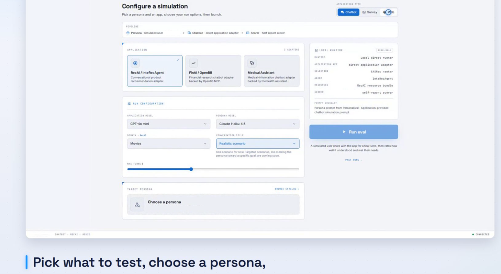

The science of simulated users.
Questions, methods, and findings from the MatrAIx community—covering persona grounding, simulated users, interactive environments, evaluation, and identity drift.
Featured researchBrowse all research ↓
Blog post
 MatrAIx Team
10 min
Jun 24
MatrAIx Team
12 min
Jun 22
Research
MatrAIx Team
11 min
Jun 20
MatrAIx Team
10 min
Jun 24
MatrAIx Team
12 min
Jun 22
Research
MatrAIx Team
11 min
Jun 20
Synthetic Personas Need Explicit Grounding
A practical introduction to why believable synthetic personas still need provenance, reporting, and behavioral validation.

FrameworkPersonaEval: Persona-Based User Simulation
Evaluate interactive applications using 1M synthetic personas. Results in hours, not weeks.
MicroVerse: Identity Drift in Multi-Agent Simulations
Measuring and correcting persona drift in long-horizon LLM agent interactions.
Research
PublicationJun 24, 2026
Synthetic Personas Need Explicit GroundingWhy believable synthetic personas still need provenance, reporting, and behavioral validation.
↗
ApplicationJun 22, 2026PersonaEval: Persona-Based User SimulationEvaluate interactive applications using population-scale synthetic personas.
↗
PublicationJun 20, 2026MicroVerse: Identity Drift in Multi-Agent SimulationsMeasuring and correcting persona drift in long-horizon agent interactions.
↗
DatasetIn development
MatrAIxPersona: Population-Scale Persona InfrastructureGrounded population construction, provenance, filtering, and diversity measurement.
—BenchmarkIn development
PersonaBench: Do Agents Actually Follow Their Personas?Tasks for adherence, self-consistency, behavioral sensitivity, and identity drift.
—SystemIn development
A Shared Environment and Telemetry InterfaceA reproducible contract for survey, chatbot, web, app, and multi-agent episodes.
—ValidationIn development
When Do Simulated Users Match Human Behavior?Human calibration for realism, subgroup fidelity, uncertainty, and failure modes.
—ApplicationIn development
Simulated Users for Conversational AI EvaluationTask completion, helpfulness, safety, and multi-turn reliability at scale.
—PublicationIn development
From Personas to User SimulationA structured review of methods, benchmarks, applications, risks, and open questions.
—Have research or insights to share? We welcome community contributions.
Submit a post →